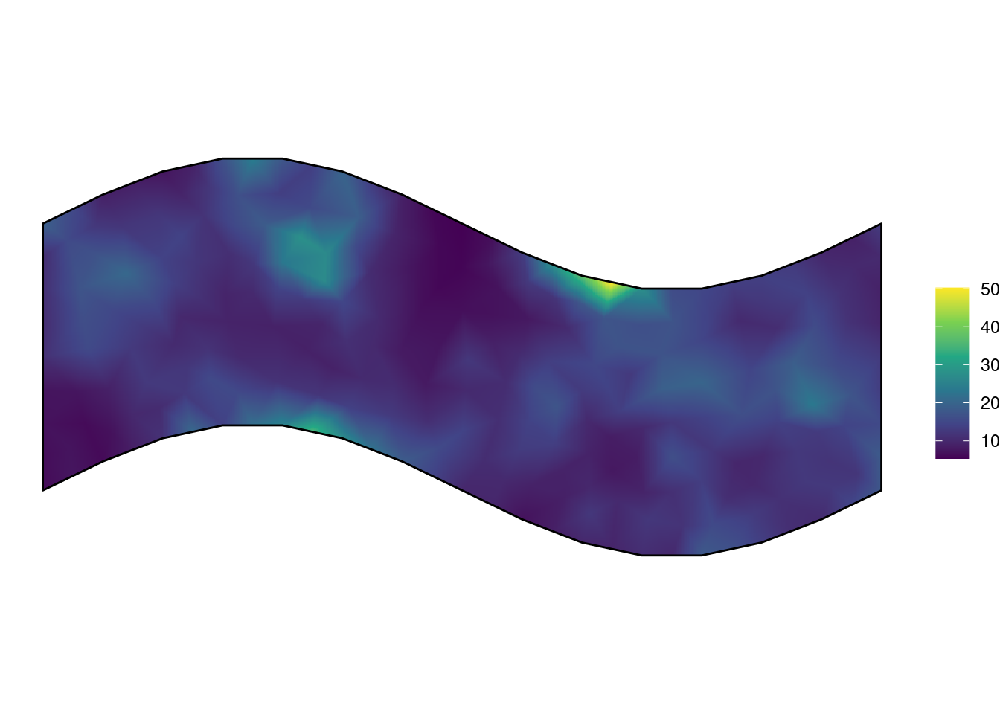
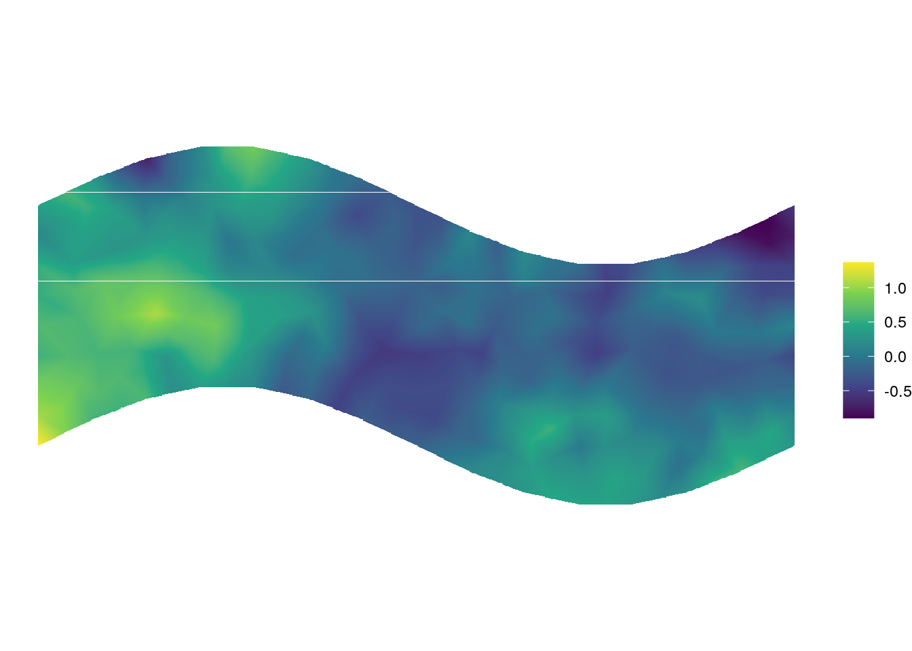
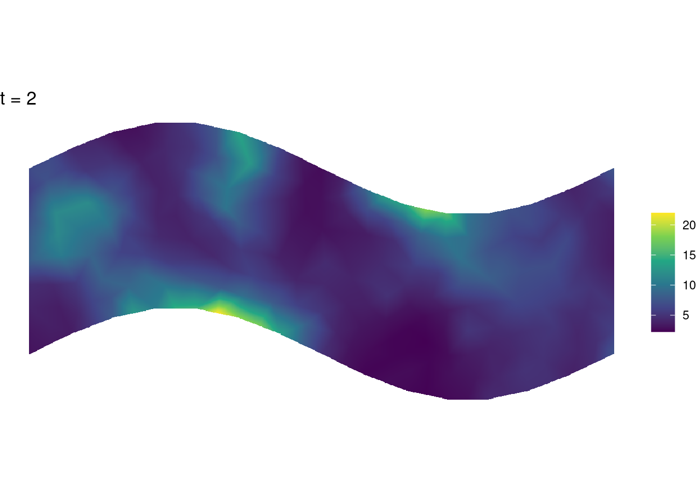
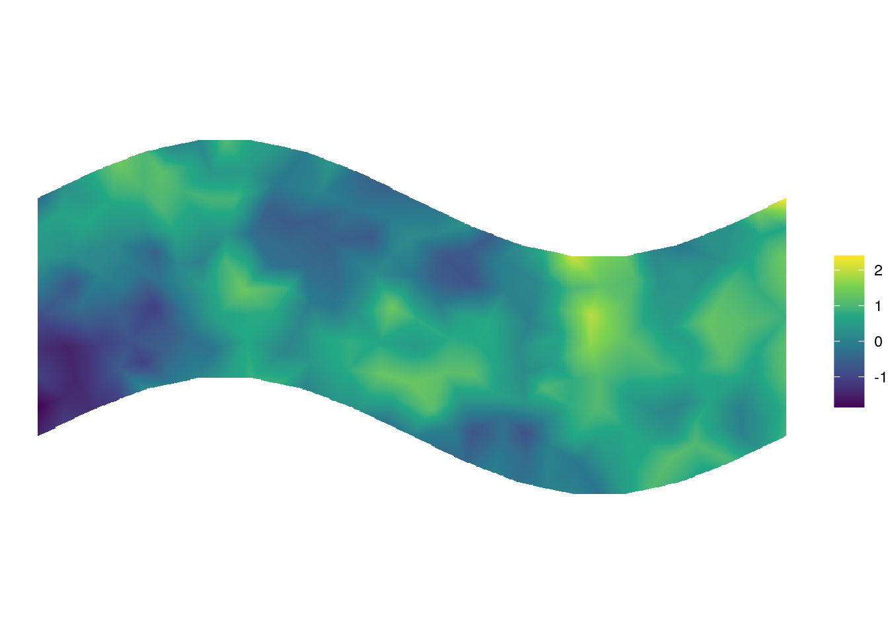

Chapter 2 A log-Gaussian Cox Process
A Log-Gaussian Cox Process (LGCP) is a doubly stochastic spatial point process. In the simplest case, the intensity of the point process over space is given by: \[\Lambda(s) = \text{exp}(\beta_0 + G(s) + \epsilon)\] where \(\beta_0\) is a constant, known as the intercept, \(G(s)\) is a Gaussian Markov Random Field (GMRF) and \(\epsilon\) an error term.
It is conventional to use Matérn covariance function to define the covariance of the random field. This takes two parameters \(\tau\) and \(\kappa\), commonly reported as \(r=\frac{\sqrt{8}}{\kappa}\) and \(\sigma=\frac{1}{\sqrt{4\pi\kappa^2\tau^2}}\), where \(r\) is the range and \(\sigma\) is the standard deviation.
2.1 The fit_lgcp() function
## function (locs, sp, smesh, tmesh, parameters, covariates, tmb_silent = TRUE,
## nlminb_silent = TRUE, ...)
## NULL2.1.1 Fitting a spatial only LGCP
require(maptools)
data(xyt, package = "stelfi")
domain <- as(xyt$window, "SpatialPolygons")
locs <- data.frame(x = xyt$x, y = xyt$y)
smesh <- INLA::inla.mesh.2d(boundary = INLA::inla.sp2segment(domain),
max.edge = 0.75, cutoff = 0.3)
system.time(fit <- fit_lgcp(locs = locs, sp = domain, smesh = smesh,
parameters = c(beta = 0, log_tau = log(1), log_kappa = log(1))))## user system elapsed
## 4.072 0.233 4.244## Estimate Std. Error
## beta 2.4481848 0.09034657
## log_tau -1.3156570 0.33288053
## log_kappa 0.9547072 0.29440167
## range 1.0887319 0.32052448
## stdev 0.4047190 0.05027126
Comparing to inlabru
require(inlabru)
matern <- INLA::inla.spde2.matern(smesh)
cmp <- coordinates ~ mySmooth(coordinates, model = matern) + Intercept(1)
coordinates(locs) <- c("x", "y")
system.time(fit_inla <- lgcp(cmp, locs,
samplers = domain,
domain = list(coordinates = smesh),
options = list(control.inla = list(int.strategy = "eb"))))## user system elapsed
## 6.789 7.096 7.229## mean sd 0.025quant 0.5quant 0.975quant mode kld
## Intercept 2.487259 0.1398606 2.212923 2.487415 2.761708 NA 0.02828075## mean sd 0.025quant 0.5quant 0.975quant mode
## Theta1 for mySmooth -0.4238338 0.2545314 -0.9136293 -0.4283829 0.08912995 NA
## Theta2 for mySmooth 0.2227479 0.3017400 -0.3848267 0.2279306 0.80395050 NA2.1.2 Spatiotemporal LGCP
The LGCP model can also be used for spatiotemporal modelling where there is autoregressive temporal dependence.
To achieve this, we choose an arbitrary number of time knots. The equation for an AR(1) process is as follows: \[\Lambda_i(s) = \text{exp}(\beta_0 + G_i(s) + \epsilon)\] where \(i\) indexes the time knot. \(\Lambda_i(s)\) is the field intensity at time knot \(i\), and \(G_i(s)\) the GMRF at the same time knot. Each \(G_i(s)\) shares common values for \(\tau\) and \(\kappa\).
Successive random fields are correlated through the formula \[G_i(s)=\rho G_{i-1}(s) + \epsilon_i\] where \(\rho\) is a constant between -1 and +1, and \(\epsilon_i\) is normally distributed with mean 0.
ndays <- 2
locs <- data.frame(x = xyt$x, y = xyt$y, t = xyt$t)
w0 <- 2
tmesh <- INLA::inla.mesh.1d(seq(0, ndays, by = w0))
fit <- fit_lgcp(locs = locs, sp = domain, smesh = smesh, tmesh = tmesh,
parameters = c(beta = 0, log_tau = log(1), log_kappa = log(1), atanh_rho = 0.2))
get_coefs(fit)## Estimate Std. Error
## rho 0.3100841 0.20738457
## beta 1.6852264 0.13685036
## log_tau -1.0683016 0.22402076
## log_kappa 0.4785904 0.22707189
## range 1.7526525 0.39797812
## stdev 0.5087488 0.05765947plot_lambda(fit, smesh = smesh, tmesh = tmesh, timestamp = 1) +
ggplot2::theme_void() + ggplot2::ggtitle("t = 2")
plot_lambda(fit, smesh = smesh, tmesh = tmesh, timestamp = 2) +
ggplot2::theme_void() + ggplot2::ggtitle("t = 2")
2.1.3 Simulating a spatiotemporal LGCP
Option 1 using simulate_lgcp
parameters <- c(beta = 1, log_tau = log(1), log_kappa = log(1), atanh_rho = 0.2)
simdata <- simulate_lgcp(parameters = parameters, sp = domain, smesh = smesh, tmesh = tmesh)
show_field(simdata$x[,1], smesh = smesh) +
ggplot2::theme_void()
Option 2 directly from the fitted model
simdata <- fit$simulate(fit$env$last.par, complete = FALSE)
show_field(simdata$x[,1], smesh = smesh) +
ggplot2::theme_void()